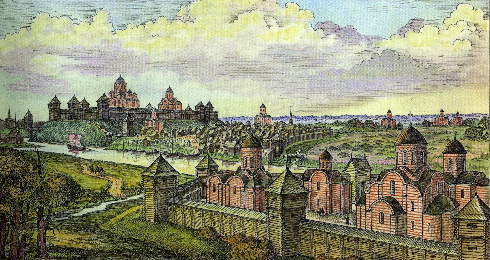

Geschichte von Belarus
Über die Frühgeschichte von Belarus ist nur wenig bekannt. Es kann angenommen werden, dass das Territorium des heutigen Belarus im 7. – 9. Jahrhundert von slawischen Volksstämmen (Kriwitschi, Dregowitschi, Radimitschi) besiedelt war.

In 862 wurde die Stadt Polozk erstmalig in der Nestorchronik erwähnt. Jahrhundert war Polozk das Zentrum des Fürstentums Polozk, eines der mächtigen ostslawischen Fürstentümer. Der erste bekannte Fürst war Rogwolod. Unter den Fürsten Bratschislav Izyaslawowitsch und Vseslaw Zauberer erreichte der Fürstentum Polozk seine Blütezeit. In dieser Zeit wurde die Stadt zu einem wichtigen Zentrum des Christentums, hier wurde der heilige Jefrossinja Polazkaja geboren.
Zur Mitte des 13.Jahrhunderts wurden belarussische Ländern Teil des Großfürstentums Litauen, eines der größten und mächtigsten Staaten Europas, das sich von der Ostsee bis zum Schwarzen Meer erstreckte. 1529, 1566, 1588 wurden Statute des Großfürstentums Litauen verschriftlicht. Das waren erste zusammengefasste Rechtsabhandlungen in Osteuropa.
1. Juli 1569 wurde eine politische Union von Lublin zwischen dem Groβfürstentum Litauen und dem Polnischen Königsreich abgeschlossen und wurde die Polen-Litauen (Rzeczpospolita) gebildet.
Mit den Teilungen Polen-Litauens (1772 und 1793) wurde Weißrussland Teil des Russischen Reiches. Katharina die Große vereinnahmte mit den Teilungen Polens das Gebiet von Belarus, das nun also unter russischer Herrschaft stand. Es wurde von Sankt Petersburg aus regiert. Der Gebrauch der weißrussischen Sprache wurde zeitweise verboten. Die katholische Kirche wurde unterdrückt, die Einwohner zur russisch-orthodoxen Religion gedrängt. 1863 kam es zu einem weißrussischen Aufstand unter dem Anführer Kostiuschko in 1794, doch dieser wurde blutig niedergeschlagen.
Im Jahr 1812 fanden auf dem belarussischen Territorium große Schlachten zwischen napoleonischen und russischen Truppen statt.
1863-1864 kam es zu Befreiungsaufständen gegen die russische Herrschaft unter der Führung von Kastus Kalinouski.
In 1914 –1918 beteiligten sich die Belorussen an erstem Weltkrieg.
Im Oktober 1917 nach der Oktoberrevolution, wurde die Sowjetherrschaft in Belarus verkündigt.
Am 25. März 1918 wurde die Belarussische Volksrepublik gegründet.
Am 1. Januar 1919 – Ausrufung der Belarussischen Sowjetischen Sozialistischen Republik (BSSR).
Im August 1919 besetzte Polen die westlichen Teile des Landes. Es kam zum Polnisch-Sowjetischen Krieg. Mit dem Vertrag von Riga erhielt Polen 1921 schließlich eine weit nach Osten vorgeschobene Grenze, so dass dann auch ein großer Teil des heutigen Weißrusslands zu Polen gehörte. Diese Grenze galt bis 1939.
Aus dem verbliebenen östlichen Teil Weißrusslands wurde die Belarussische Sozialistische Sowjetrepublik. Sie gehörte 1922 zu den Gründungsmitgliedern der Sowjetunion. Obwohl Weißrussland einerseits recht große Autonomie genoss, wurden die Entwicklungen in derSowjetunion auch in Weißrussland umgesetzt. Die Landwirtschaft wurde kollektiviert, das heißt die Bauern mussten ihre Höfe abgeben und sie wurden nun gemeinschaftlich bewirtschaftet. Russisch wurde Amtssprache.
Mit Beginn des Zweiten Weltkrieges besetzte die Sowjetunion 1939 den zu Polen gehörenden östlichen Teil Weißrusslands und gliederte ihn wieder ein.
22. Juni 1941 begann der Große Vaterländische Krieg. Viele Menschen: Soldaten und Partisanen (bewaffnete Kämpfer) kämpften gegen die deutsche Besetzung. Erst Mitte 1944 eroberte die Sowjetunion das Gebiet vollständig zurück. Am 3. Juli 1944 wurde die belarussische Hauptstadt Minsk befreit.
Viele Menschen starben während des Krieges, die Städte wurden beim Rückzug fast alle zerstört. In 1945 wurde die Republik zu einem der Gründer der Vereinten Nationen.
Am 26. August 1991 erklärte Belarus mit dem Zerfall der Sowjetunion seine Unabhängigkeit. 19. September 1991 – Änderung des Staatsnamens von Belarussische SSR zu der Republik Belarus.
Am 15. März 1994 wurde die Verfassung der Republik Belarus verabschiedet.
 Natur
Natur
 Wirtschaft
Wirtschaft
 Menschen
Menschen
 Geschichte
Geschichte
 Sehenswürdigkeiten
Sehenswürdigkeiten
 Kultur
Kultur